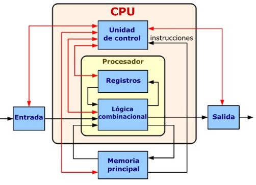
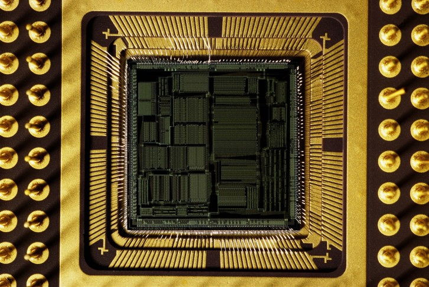
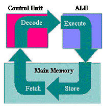
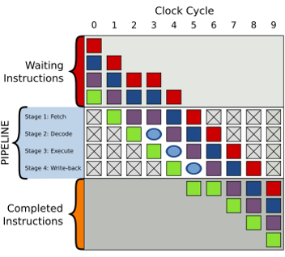

La Unidad de Procesamiento (CPU) controla el funcionamiento del computador y lleva a cabo sus funciones de procesamiento de datos. Un procesador incluye tanto registros visibles por el usuario como registros de control/estado.

Organización básica del procesador
2.2 Estructura de registros
Se emplean para controlar las instrucciones en ejecución, manejar direccionamiento de memoria y propiciar la capacidad aritmética. Los registros de CPU pueden ser de tres tipos: datos, direcciones e índice.

Tipos de registros en el procesador
2.2.1 Registros visibles para el usuario
Estos registros pueden almacenar tanto datos como direcciones, y se usan en operaciones entre registros o con la memoria (RAM).
2.2.2 Registros de control y de estado
Los registros de control gestionan el funcionamiento del procesador. Los registros de estado contienen bits que reflejan el estado del procesador tras ejecutar una instrucción.
2.3 El ciclo de instrucción
El ciclo de instrucción es el proceso que lleva a cabo el procesador para ejecutar una instrucción: búsqueda, decodificación, ejecución y almacenamiento.

Ciclo de instrucción en el procesador
2.3.1 Ciclo Fetch-Decode-Execute
Es el proceso por el cual el procesador obtiene, decodifica y ejecuta una instrucción de lenguaje máquina.
2.3.2 Segmentación de instrucciones
La segmentación divide el ciclo de instrucción en etapas que pueden ejecutarse simultáneamente, mejorando la eficiencia del procesador.

Segmentación de instrucciones en el procesador
2.3.3 Conjunto de instrucciones: características y funciones
La segmentación de instrucciones mejora la eficiencia del procesamiento, y los procesadores con esta tecnología se conocen como "pipeline processors".
2.3.4 Modos de direccionamiento
Los modos de direccionamiento indican cómo se localizan los operandos en la memoria o los registros. Algunos de los modos son: direccionamiento por registro, direccionamiento inmediato, y direccionamiento relativo al PC.
2.4 Casos de estudio de CPU reales
Un ejemplo de un CPU real es el MOTOROLA 68000, que utiliza registros de datos y punteros. Este procesador tiene dos bancos de 8 registros de 32 bits, y un contador de programa de 32 bits.